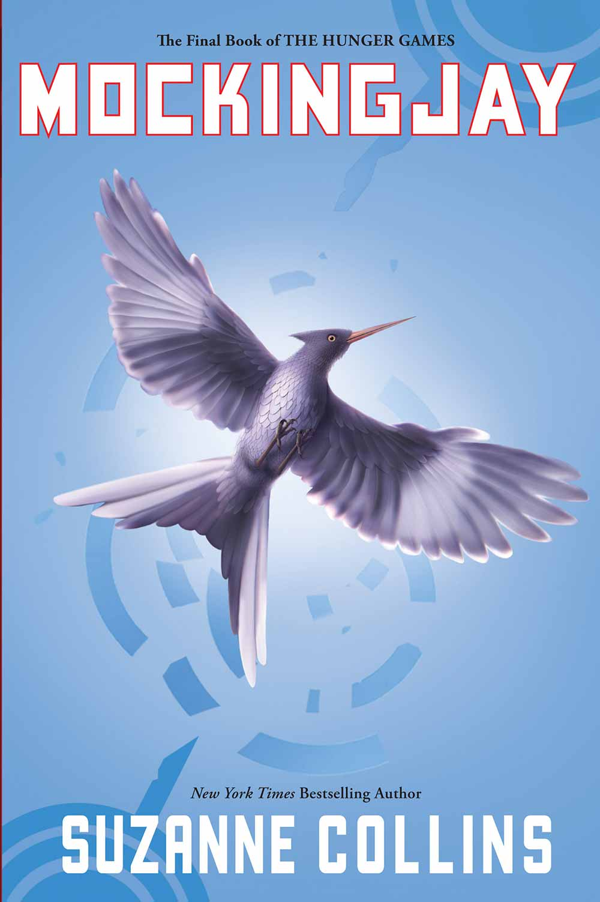

Books

MockingJay
Katniss Everdeen, girl on fire, has survived, even though her home has been destroyed. There are rebels. There are new leaders. A revolution is unfolding.(Scholastic Press, 2010)

The Ballad of Songbirds and Snakes
#1 USA TODAY BESTSELLER
#1 NEW YORK TIMES BESTSELLER
#1 PUBLISHERS WEEKLY BESTSELLER
A BARNES & NOBLE BEST YA SCIENCE FICTION AND FANTASY BOOK OF 2020
AN AMAZON BEST SCIENCE FICTION AND FANTASY BOOK OF 2020
A NEW YORK TIMES EDITORS' CHOICE
2020 GOODREADS CHOICE AWARD FINAL ROUND--YA FANTASY
WATERSTONES BEST BOOKS OF 2020: SCIENCE FICTION & FANTASY
COSMOPOLITAN'S 20 BEST YA BOOKS OF 2020
TODAY'S BEST YA BOOKS OF 2020
2021 KIDS' BOOK CHOICE AWARDS FINALIST
BEST FANTASY WORLD BUILDER
SUZANNE COLLINS/THE BALLAD OF SONGBIRDS AND SNAKES
A HUNGER GAMES NOVEL